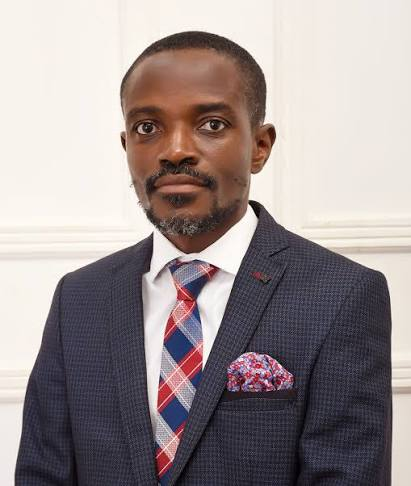
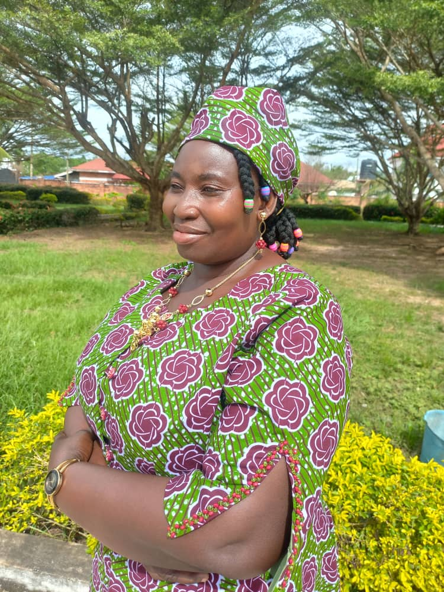
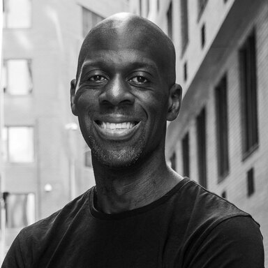

Our Vision
A future where every community has clean air, clean water, and equal access to sustainable resources.
EcoRise Foundation was born from a simple observation: the communities most affected by environmental degradation are rarely part of the decisions meant to fix it. We exist to close that gap, working hand-in-hand with local people to design climate and environmental solutions that actually fit their needs.
What began as a single neighbourhood clean-up in 2016 has grown into a foundation running reforestation, clean water, renewable energy, recycling, and climate education programmes across the country.

EcoRise began as a volunteer clean-up initiative in a single neighbourhood.
Launched our Tree Planting Campaign, restoring over 200 hectares of degraded land.
Installed our first ten boreholes, bringing safe water to five rural communities.
Began installing solar micro-grids in off-grid villages across the Volta Region.
EcoRise now runs six active programmes reaching thousands of families each year.
A future where every community has clean air, clean water, and equal access to sustainable resources.
To empower communities through environmental restoration, renewable energy access, and sustainability education.
We act with honesty and transparency in every partnership.
Local voices lead every project we design and deliver.
Long-term environmental health guides every decision we make.
We seek practical, creative solutions to environmental challenges.
Every EcoRise programme is designed to advance one or more of the following objectives.


